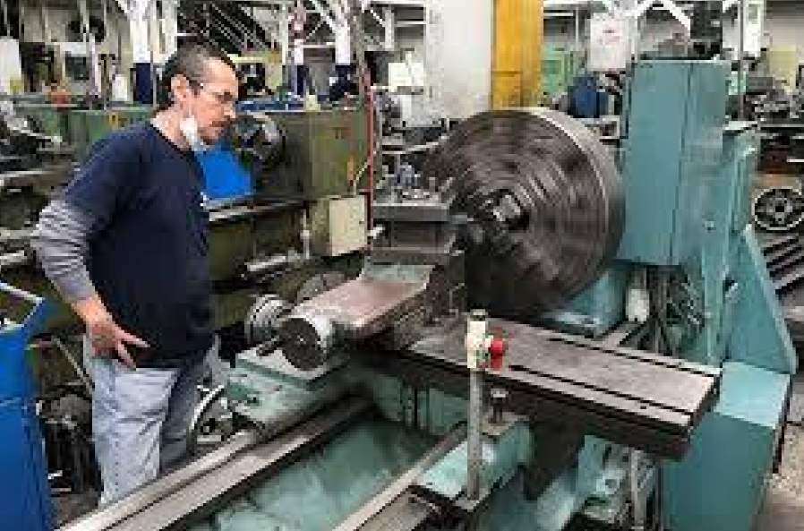
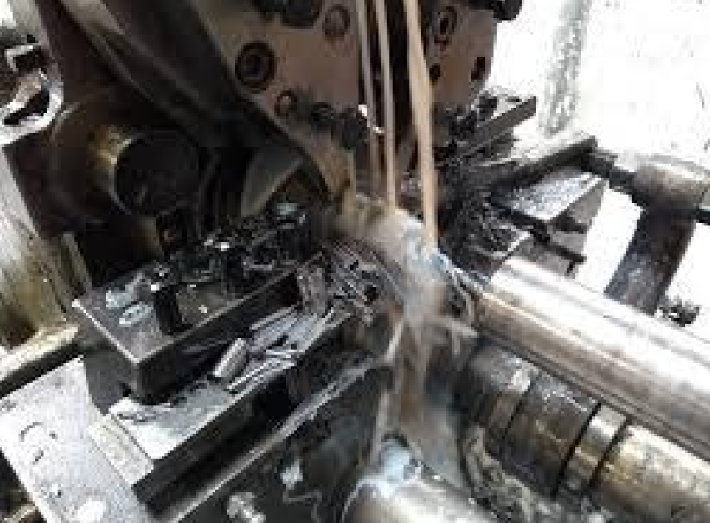
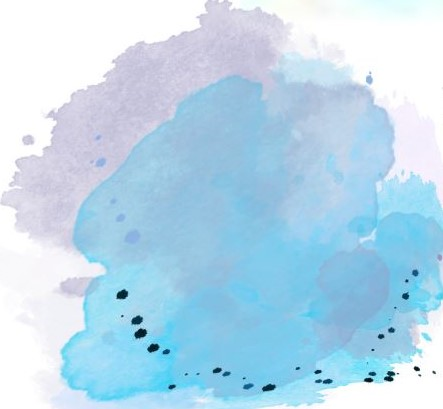

Refaccionamiento de Piezas
¿Qué es el maquinado por refaccionamiento?
El maquinado por refaccionamiento de piezas consiste en reparar, reacondicionar o reconstruir componentes metálicos que han sufrido desgaste, fractura, deformación o daño por uso, mediante procesos de mecanizado, con el objetivo de devolverles su funcionalidad y precisión original. Este tipo de maquinado se aplica cuando no es viable o conveniente reemplazar la pieza por una nueva, por razones de costo, disponibilidad o tiempo.
Objetivos del refaccionamiento
- Restaurar dimensiones originales.
- Corregir deformaciones o desalineaciones.
- Recuperar tolerancias y ajustes.
- Mejorar superficies desgastadas.
- Prolongar la vida útil de equipos o maquinaria.


Ejemplos comunes de piezas refaccionadas
- 1. Ejes dañados o desgastados.
- 2.Rodillos, bujes o chumaceras.
- 3. Camisas de cilindros hidráulicos.
- 4. PCarcasas de bombas o reductores.
- 5. Bridas con superficies corroídas.
- 6. Roscados internos rotos o deformados.
Beneficios del maquinado por refaccionamiento
- Ahorro de costos frente a la compra de piezas nuevas
- Menor tiempo de inactividad de maquinaria
- Permite fabricar piezas ya descontinuadas
- Mejora la sostenibilidad al evitar desechos innecesarios
| Proceso | Aplicación típica |
|---|---|
| Torneado | Corregir ejes, bujes, cilindros gastados o ovalados. |
| Fresado | Reparar superficies planas, caras de brida, bases. |
| Taladrado y roscado | Rehacer agujeros dañados, roscas barridas. |
| Soldadura + maquinado | Rellenar zonas desgastadas y luego mecanizarlas. |
| Rectificado | Ajustar superficies críticas con precisión. |
| Mandrinado | Reacondicionar alojamientos de cojinetes o ejes. |
| Cepillado | Recuperar guías planas en bancadas o bases. |
| Industria | Ejemplos de refaccionamiento |
|---|---|
| Minera | Ejes, chumaceras, rodillos transportadores. |
| Agrícola | Piezas de tractores, molinos, bombas. |
| Industrial general | Equipos rotativos, válvulas, soportes. |
| Construcción | Ejes de retroexcavadoras, trenes de rodaje. |
| Transporte | Motores, frenos, sistemas de suspensión. |
 proyecto@grupoindustrialancor.com
proyecto@grupoindustrialancor.com
 grupoindustrialancor.com
grupoindustrialancor.com
5527841859

